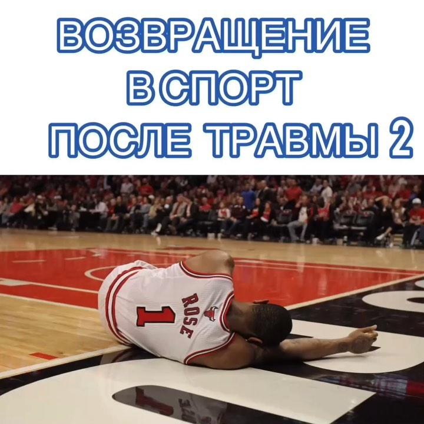

Нейродинамика - концепция лечения скелетно-мышечной патологии, которая описывает клиническое применение биомеханики и физиологии нервной ткани (Shacklock, 2005). Нервная система обладает естественной способностью к движению и противостоит механическим усилиям, которые возникают, при повседневных движениях. И для того ,чтобы нервная система двигалась нормально, она должна сохранять три базовые механические функции:

Возвращение в спорт после травмы - Часть 2
Ноябрь 04, 2019Y-Тест. В нем оценивается: 1. Максимальное расстояние до которого можно дотянуться в каждом направлении без изменения положения опорной ноги. Разница со здоровой ногой менее 10%. 2. Стабильное положение опорной ноги До выполнения теста допускается выполнение 4-6 пробных попыток в каждом направлении. Затем выполняется три попытки в каждом направлении на каждую ногу. Допускается легкое касание.
Возвращение в спорт после травмы
Октябрь 22, 2019«Когда я смогу играть/бегать/плавать?». Уверен, что этот вопрос слышал каждый специалист по физической реабилитации. Ответ на него не может быть однозначным, поскольку все определяется индивидуально. В идеальном варианте решение о возвращении на площадку принимается коллективно: лечащим врачом, реабилитологом и тренером. Однако, этот подход имеет место лишь в профессиональных клубах (и то не во всех). Поэтому окончательный «вердикт» в большинстве случаев выносит специалист по физической реабилитации / врач. И для того, чтобы возвращение к любимой активности было максимально безопасным , это решение должно основываться на объективном обследовании, клинических и функциональных тестах.